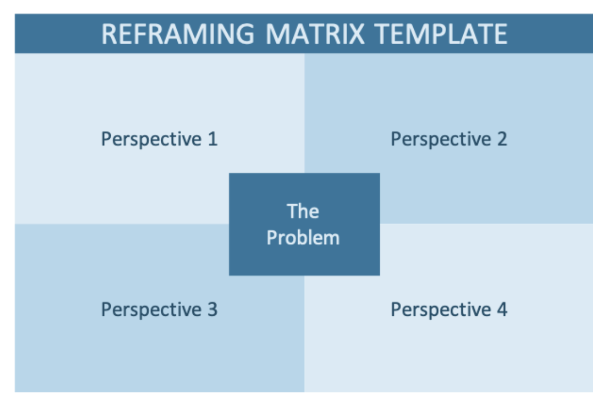
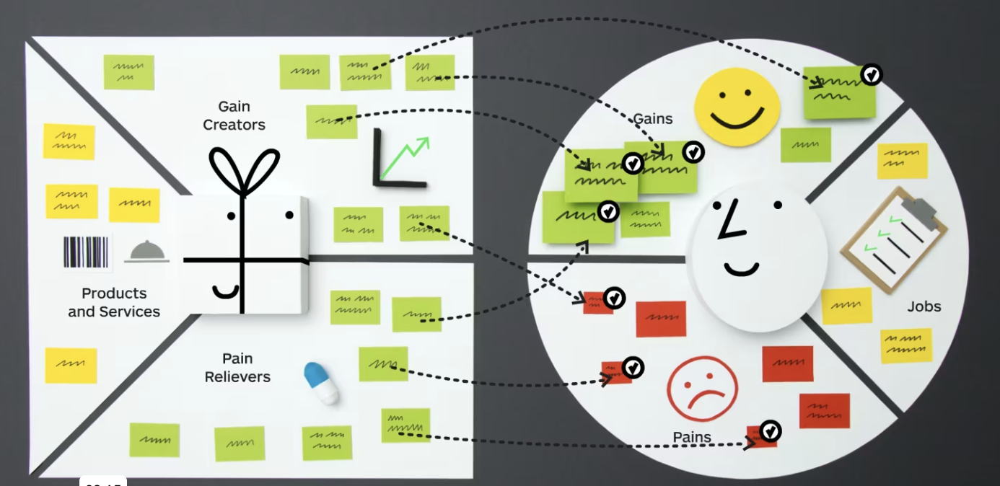

How I generated a Miro Board using Anthropic MCP and Agent.ai

Autonomous Agents - A Multipart Series about Manus, Anthropic MCP and other related technologies is sponsored by Agent.ai - Discover, connect with and hire AI agents to do useful things.
This is my third newsletter on this topic of Autonomous Agents using Anthropic MCP + Agent.ai Tools that was inspired by Manus. The first 2 newsletters introduced Manus, how I got inspired to build a poor man's Manus and how I am leveraging Anthropic MCP + Agent.ai tools in my agent building. You can find them here -
Autonomous Agents - It all started with Manus!!
Autonomous Agents : Anthropic MCP gives a glimpse into the future
Continuing our journey towards building autonomous agents, the next step was to try something that I had tried to do using Agent.ai but gave up very quickly and this was to build a Miro board from an agent.
So let's start with why would I want to build an agent that creates a Miro board? I feel very strongly that a lot of work that strategy consultants do, will be disrupted by Generative AI. To that end, I have been building various agents to showcase work that one would normally pay consultants for. I am not saying that this will 100% replace the consultant but they will get you 80% of the way there.
Here are a list of agents that I've built that showcase this -
A couple of these have visuals that go along with the output and what seemed to make a lot of sense was to take the text output of my agent and generate a Miro Board.


The good news is that Miro has an API and Agent.ai can call the Miro API and create a board, build shapes and place sticky notes. So technically it could be done. Where I got stuck was the complexity of the Miro API - It is hard to understand and it requires something that I am not good at - describing the position of each object on an X,Y axis. Imagine the board above - It has over 30 sticky notes and other shapes etc. That would require 30 API calls and 30 actions in Agent.ai and I would need to know the X, Y coordinates for each. As you can imagine I gave up quickly.
So when I started playing around with MCP, I wanted to know if I could give instructions in Claude Studio and would I be able to use a prompt to call the APIs and build a Miro board. While the actual process was a bit more complicated, I was able to generate a Miro Board for the value proposition canvas (it wasn't pretty, but it definitely proved the concept out).
So I started out by asking -
I have got a Value Proposition Canvas (Strategyzer) that has the Customer Profile and Value Map and I need to build an agent in Agent.ai that will generate a Miro Board for me by taking the text I have on the Value Proposition Canvas. I don't know how to use the Miro API, but I would like to call it using Agent.ai's Web API tool.. can you help me do this?
It's response was -
Where I found it tremendously helpful was that it walked me through the process of getting the Miro API token (go to this screen, do this, then copy this etc.). It then made all the API calls and helped me troubleshoot the errors.
The main error we got was because Claude was using an old version of the API and once we figured that out, I asked it to use Agent.ai's web search to find the new API. It found the new API and learned the new structure and then ran it to create the board.
It made over 30 calls that all looked like this. There is no way I would be writing this by hand. I needed something that would do this autonomously.
It even explained it's process to me -
To create the Value Proposition Canvas in Miro, I'm using four different types of items from the Miro API:
This combination of elements allows us to recreate the Value Proposition Canvas structure while working within the constraints of the Miro API.
When it was all said and done, it made over 60 API calls to build the board.
Here is a link to a video that demonstrates this.
Why am I so excited about this - there are many use cases, where our agents need to update data in other systems. In this case, it happened to be Miro. This last step of updating data in other systems, is what I see as the last mile problem - where an agent moves from doing pure research to actually taking action on the research and this was what was impressive about Manus.
We've all seen Deep Research do some amazing research, but to act of that research, still needs a human to now read it and do something in some system (even if it is sending a summary email or a Slack Message etc.). When agents go past the research and start taking actions, then they unlock a myriad of use cases and this is an example of that.
Imagine a consultant that takes in some strategy documents from a client, writes an agent that reviews the strategy and generates an output that ends up in a Miro board, that now the team can work with. It shows that agents can now start tackling more aspects of the workflow and start delivering to the promise of Vertical SaaS applications that handle entire workflows.
BTW - if anyone is interested in reading through the entire chat conversation and see all the gory details, here is a link.
What I will leave you with is that if you have got this far in the newsletter and you have not built an agent, you might want to get started. With Anthropic MCP + Agent.ai tools, it has become even easier.